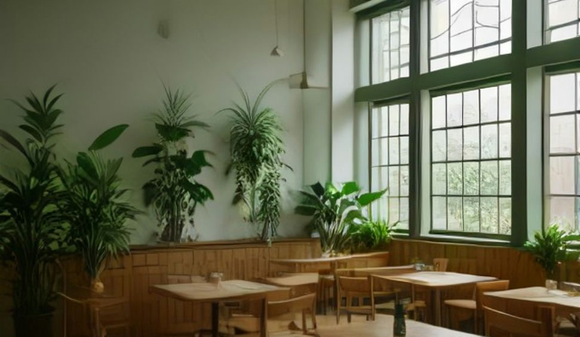
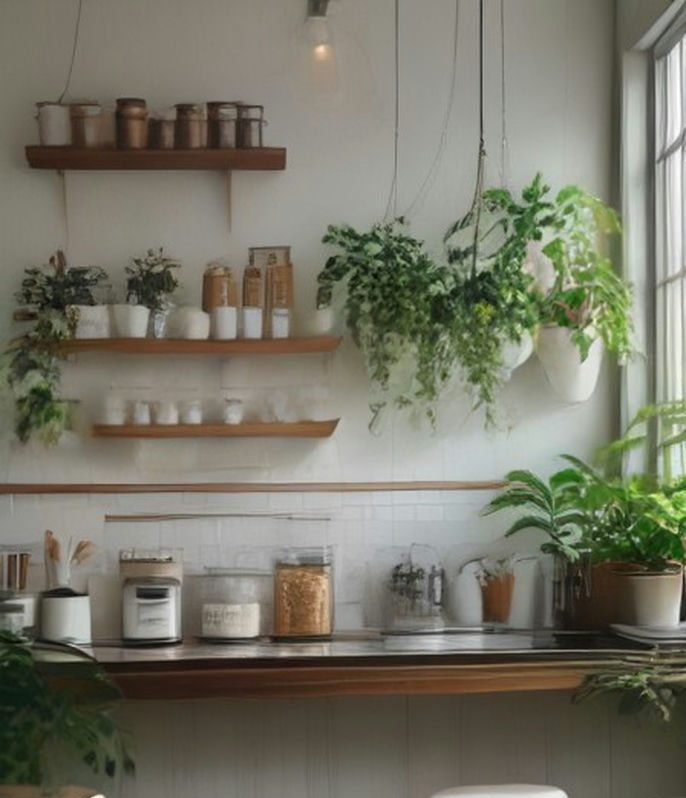
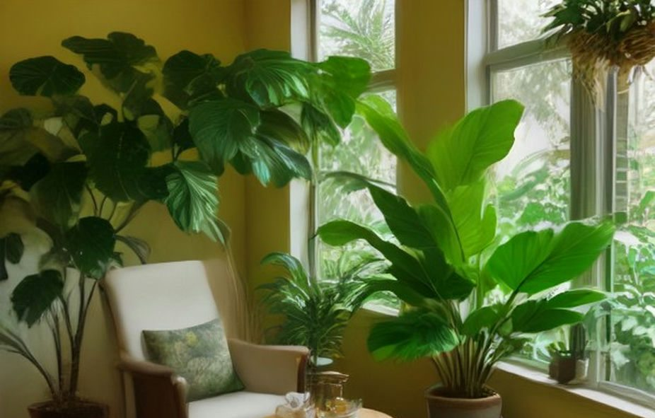
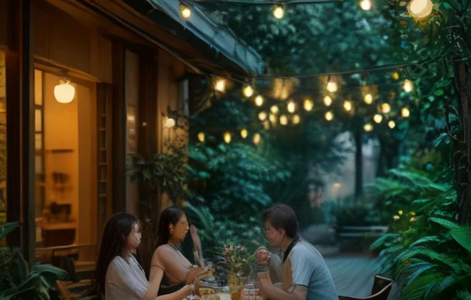
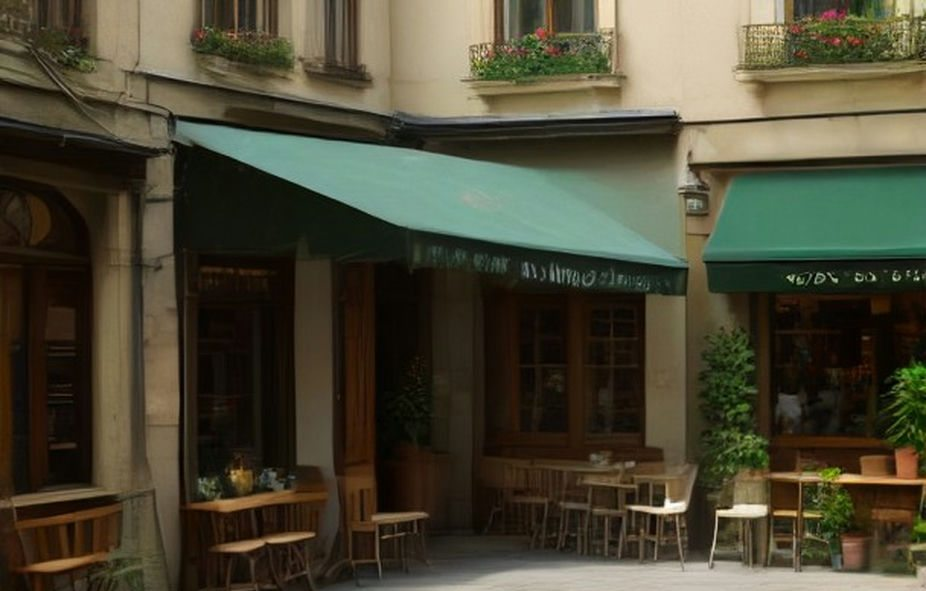

Café con luz, plantas y algo rico al lado.
Granos de pequeños productores, tostados por nosotros, dulces horneados cada mañana y salados para quedarse un rato más.
Tostado de la casa
Cafés de Minas Gerais, Espírito Santo y la Mantiqueira, tostados cada semana.
Horneado cada mañana
Croissants, tortas y panes salen del horno antes de abrir la puerta.
Más de 120 plantas
Un salón con sol todo el día y una terraza verde para trabajar o charlar.


Una casa vieja, mucha luz y una cafetera.
Folha & Grão nació en 2019 en una casona de esquina en Vila Madalena. Abrimos las ventanas, llenamos todo de plantas y armamos la barra donde antes estaba la cocina.
Hoy tostamos nuestro propio café, horneamos todo lo que servimos y seguimos con la misma idea: que cada taza se tome con calma.
Adentro, sol. Afuera, jardín.
Mesas grandes para trabajar, rincones para leer y una terraza con luces para la tarde.


Te esperamos con la taza lista.
Rua Fradique Coutinho, 1120 · Vila Madalena, São Paulo